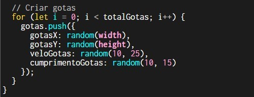
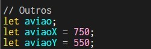

Noite Chuvosa:
Análise Completa
Primeiro passo: desenhar a Lua
Como desenhamos a lua? Você deve estar se perguntando... A lua foi criada dentro de uma função chamada desenharLua(), justamente para facilitar seu uso sempre que for necessário chamá-la no programa.
A lógica da lua é bem simples: primeiro desenhamos um círculo claro (em tom bege), representando a lua cheia. Em seguida, desenhamos um segundo círculo um pouco menor e com a cor do fundo (um azul escuro), ligeiramente deslocado para a direita.
Esse segundo círculo fica sobreposto ao primeiro, criando um efeito visual que simula a fase minguante da lua — como se uma parte dela estivesse escondida pela sombra.
Código utilizado:
Segundo passo: criar as estrelas
As estrelas foram criadas para dar um toque mais realista ao cenário noturno. Mas como isso foi feito?
Primeiro, criamos um array chamado estrelas e definimos que o total de estrelas seria 200.
Dentro da função setup(), usamos um laço for para gerar essas 200 estrelas, onde cada uma recebe:
- estrelaX: posição horizontal aleatória na tela;
- estrelaY: posição vertical aleatória;
- brilhoEstrela: valor de brilho aleatório entre 100 e 255;
- tamanhoEstrela: tamanho aleatório entre 1 e 2 pixels.
Depois disso, criamos uma função chamada desenharEstrela(), que desenha cada estrela na tela com fill no valor do brilho dela e um circle() com o tamanho definido.
Por fim, chamamos essa função dentro do draw(), junto com a lua e a chuva, para que as estrelas apareçam sempre que o cenário for desenhado.
Código utilizado:
1. Declaração de variáveis no início do código

2. Geração das estrelas dentro da função setup()
3. Função para desenhar as estrelas na tela

Terceiro passo: criar a chuva
A chuva foi adicionada para trazer uma sensação de ambiente dinâmico e reforçar o clima do cenário. Mas como ela foi criada?
Assim como as estrelas, começamos criando um array chamado gotas e definimos o total de gotas como 300.
Na função setup(), usamos um laço for para gerar essas 300 gotas. Cada gota possui as seguintes propriedades:
- gotasX: posição horizontal aleatória;
- gotasY: posição vertical aleatória;
- veloGotas: velocidade aleatória (quanto maior, mais rápido cai);
- cumprimentoGotas: comprimento da linha que representa a gota.
Depois disso, criamos a função desenharChuva() que desenha as gotas como linhas com line(), usando stroke azul para representar a cor da água.
A cada frame, a posição vertical da gota aumenta de acordo com sua velocidade. Se ela sair da tela, é reiniciada no topo, criando o efeito contínuo de chuva.
Por fim, a função desenharChuva() é chamada dentro do draw(), junto com a lua, as estrelas e o avião.
Código utilizado:
1. Declaração de variáveis no início do código
2. Geração das gotas dentro da função setup()
3. Função para desenhar a chuva
Quarto passo: adicionar o avião
O avião foi incluído como um detalhe especial no cenário, dando um toque de movimento e realismo, como se estivesse sobrevoando a noite chuvosa.
Primeiro, carregamos a imagem do avião usando a função preload(), com a linha:
aviao = loadImage("images/Avião.png")
Depois disso, criamos duas variáveis para controlar a posição do avião na tela:
- aviaoX: posição horizontal, iniciando fora da tela à direita;
- aviaoY: posição vertical, começando na parte inferior.
No setup(), o som do avião também é carregado com loadSound() e tem seu volume definido com setVolume().
Na função draw(), usamos image() para desenhar o avião na posição atual, e depois alteramos suas coordenadas para fazê-lo subir e ir para a esquerda, como se estivesse voando na diagonal.
Código utilizado:
1. Declaração de variáveis no início do código
2. Desenho e movimento do avião no draw()
Passo mais importante: criar o raio
O raio foi adicionado para representar uma tempestade intensa no cenário. O objetivo era criar um efeito visual marcante, que simula os relâmpagos que ocorrem durante uma noite chuvosa.
Para isso, criamos um array chamado raio, que armazena os pontos (coordenadas x e y) do traçado do relâmpago. Além disso, usamos uma variável mostrarRaio para controlar se o raio deve ser desenhado ou não, e tempoDoFlash para controlar o efeito de clarão na tela.
O raio é gerado por uma função chamada gerarRaio(). Ela cria uma linha que desce da parte de cima da tela até embaixo, com pequenas variações horizontais aleatórias para simular o aspecto irregular de um relâmpago real. Veja como funciona:
- Começamos com uma posição inicial no topo da tela;
- A cada passo, avançamos um pouco para baixo (eixo y) e variamos a posição horizontal (eixo x) para os lados;
- Esses pontos são salvos no array
raio.
Para desenhar o raio na tela, usamos a função desenharRaio(), que percorre os pontos armazenados e os conecta usando beginShape(), vertex() e endShape(). A cor usada é um tom de azul claro com strokeWeight mais espesso para destacar o raio.
Além disso, criamos um efeito de clarão branco quando o raio aparece. Isso é feito desenhando um retângulo branco translúcido sobre toda a tela. Esse efeito dura apenas alguns milissegundos e é controlado comparando o tempo atual com tempoDoFlash usando millis().
O raio pode surgir de duas formas:
- Automática: a cada quadro (frame), há uma pequena chance (por exemplo, 1%) de um novo raio ser gerado aleatoriamente;
- Manual: se o usuário clicar com o mouse (
mousePressed()), o raio aparece instantaneamente.
No draw(), verificamos se é para desenhar o raio e se ainda estamos no tempo do flash. Se sim, chamamos desenharRaio() e desenhamos o clarão branco.